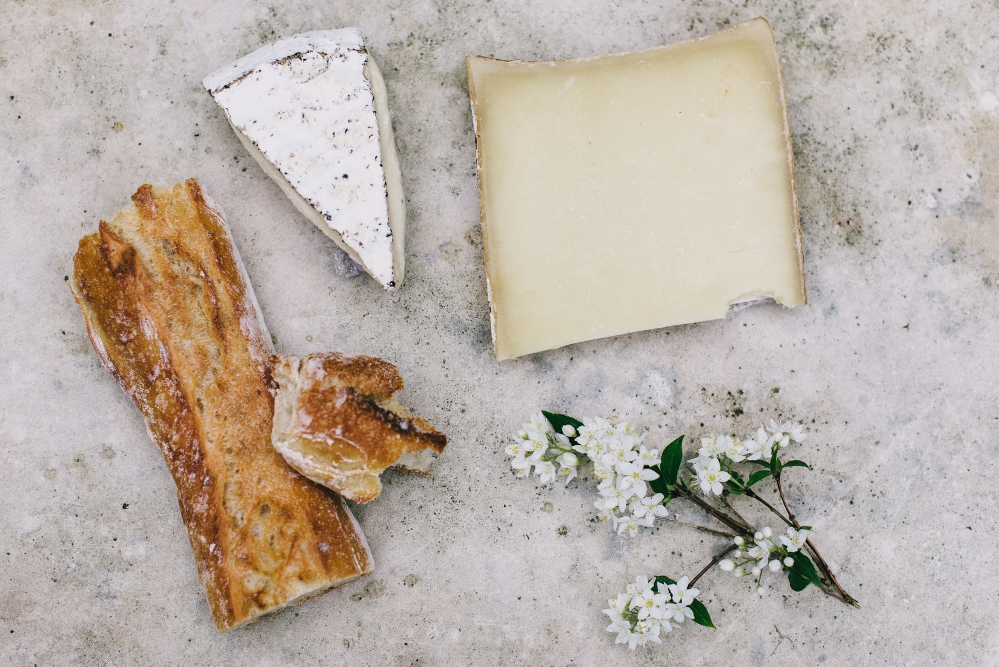
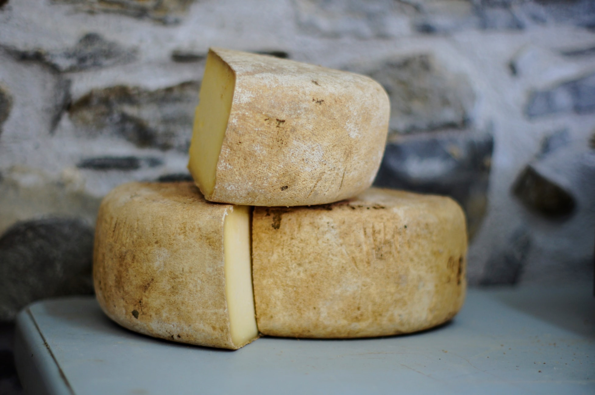
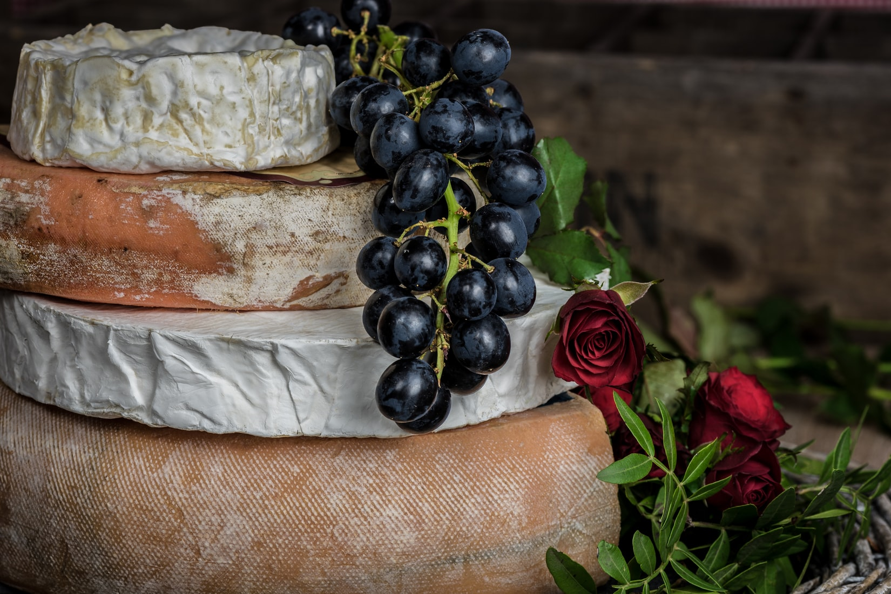

Pont l'Eveque is a French cheese made in Vietnam by Vinacheese
Pont l'Eveque is a French cheese. It is believed that its name is derived from 'Norman abbey' in Normandy, France where it was mainly produced during the 12th century. The cheese is also known as Moyaux cheese.
Probably one of the oldest cheeses of that area, Pont l'Eveque was called as d'Angelot during ancient days. Made from cow's milk, this cheese is manufactured throughout the year. Small, square shaped Pont l'Eveque is of pale yellow color while its rind has white-orange color.
A soft and very rich cheese with creamy and full-bodied flavor, tastes best when eaten at room temperature. It is an excellent dessert cheese, which goes well with a robust wine.
- Made from cow's milk
- Country of origin: France
- Region: Basse-Normandie
- Alternative spellings: Moyaux cheese
- Type: soft
- Fat content: 45%
- Texture: creamy
- Rind: washed
- Color: pale yellow"
"Pont-l'évêque - Named after the village in Normandy where it supposedly first appeared, this cheese is one of the most popular in France. An old cheese, it dates from at least the 12th century, when it was made by monks; it was once known as 'white meat' as it was eaten instead of meat on fasting days .. Pont l'évêque is a cow's milk cheese, with a full, rich, sweet, slightly tangy flavour profile and a thin brownish rind; it is very similar to livarot, another washed-rind......"
"Pont-l'Évêque is a French cheese, originally manufactured in the area around thecommune of Pont-l'Évêque, between Deauville and Lisieux in the Calvados départementof Basse-Normandie. It is probably the oldest Norman cheese still in production.[1] Pont-l'Évêque is an uncooked, unpressed cow's-milk cheese, square in shape usually at around 10 cm square and around 3 cm high, weighing 400g. The central pâte is soft, creamy pale yellow in colour with a smooth, fine texture and has a pungent aroma. This is surrounded by a washed rind that is white with a gentle orange-brown coloration. The whole is soft when pressed but lacks elasticity. It is generally ranked alongside Brie,Camembert, and Roquefort as one of the most popular cheeses in France."
tasted the cheese very simply with fresh crusty bread. The taste was creamy and had no acidic bite, but was sweet with adequate saltiness. The texture was soft but firm and not oozy but a little sticky as it warmed to room temperature. The cheese was spreadable at room temperature and the rind was enjoyable as well.
Pont l'Eveque is made in a distinctive square shape which is achieved by cutting the curds into blocks rather than into small pieces or grains. One block makes one cheese. They are drained and placed in fat square molds. After dry-salting, the cheeses are ripened in humid cellars.
This pungent French gourmet cheese is still made on the farms of the Pays d'Auge in Normandy just as it has been for centuries. The maturing cheeses are washed with brine to give a light tan-colored rind which develops the characteristic pungency of the cheese. Indeed the aroma is strong enough to qualify the cheese for the top ten most pungent French cheeses, but it should not be so strong that it is unpleasant.
The yellow paste is supple with a few small holes. The aroma from the rind is strong but not overpowering. There are farmyard smells with bacon and ammonia. The paste has a much milder aroma reminiscent of nuts. The flavor is relatively mild and sweet, with grassy herbaceous tones and shortbread cookies.



For order, please contact:
📞 03.93.83.2808
✉️ sales@vinacheese.com
📌 Pick up at our store | 347/19 Chu Van An street, Binh Thanh district, Ho Chi Minh City